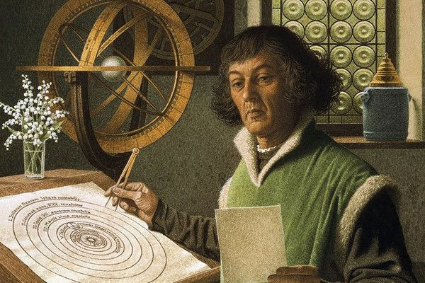
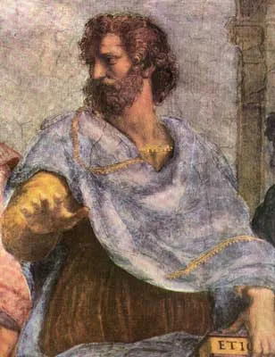

El heliocentrismo es un modelo astronómico según el cual la Tierra y los planetas se mueven alrededor del Sol relativamente estacionario y que está en el centro del universo. Históricamente, el heliocentrismo se oponía al geocentrismo, que colocaba en el centro a la Tierra. La idea de que la Tierra gira alrededor del Sol fue propuesta desde el s. iii a. C. por Aristarco de Samos. Aunque no recibió apoyo de otros astrónomos de la antigüedad, sí fue citado por Arquímedes en El contador de arena.
A cualquiera que se detenga a mirar el cielo, le parecerá que la Tierra se encuentra estática en un solo lugar mientras que todo en el cielo sale por el Oriente y se esconde por el Poniente una vez al día. Con algo más de escrutinio, sin embargo, se observarán movimientos más complicados. Por ejemplo, que los puntos de salida del Sol y de la Luna cambian a lo largo del año, o que algunas estrellas y planetas desaparecen durante muchos meses, o bien que los planetas a veces aparentan haberse movido en dirección contraria en relación con las estrellas de fondo (este «movimiento aparente» se conoce como retrogradación de los planetas).
Es la teoría que sostiene que la Tierra está en el centro del universo y que los cuerpos celestes, incluido el Sol, orbitan alrededor de la Tierra.
Esta teoría fue predominante en la antigüedad y la Edad Media, siendo apoyada por filósofos griegos como Aristóteles y Ptolomeo. Ptolomeo desarrolló un modelo matemático detallado (el sistema ptolemaico) que explicaba los movimientos planetarios desde una perspectiva geocéntrica.
+ El geocentrismo fue la visión del universo predominante en muchas civilizaciones antiguas, entre ellas la babilónica.En el siglo ii d. C. Claudio Ptolomeo, en su obra Almagesto, introdujo un sistema geocéntrico utilizando epiciclos, deferentes y ecuantes que tendría una amplia aceptación. El modelo de Ptolomeo estuvo en vigor hasta el siglo xvi cuando fue reemplazado por la teoría heliocéntrica de Copérnico.
Johannes Kepler formuló tres leyes fundamentales del movimiento planetario entre 1609 y 1619, basándose en observaciones meticulosas de Tycho Brahe.
Antes de que se redactaran las leyes de Kepler hubo otros científicos como Claudio Ptolomeo, Nicolás Copérnico y Tycho Brahe cuyas principales contribuciones al avance de la ciencia estuvieron en haber conseguido medidas muy precisas de las posiciones de los planetas y de las estrellas. Kepler, que fue discípulo de Tycho Brahe, aprovechó todas estas mediciones para poder formular su tercera ley.